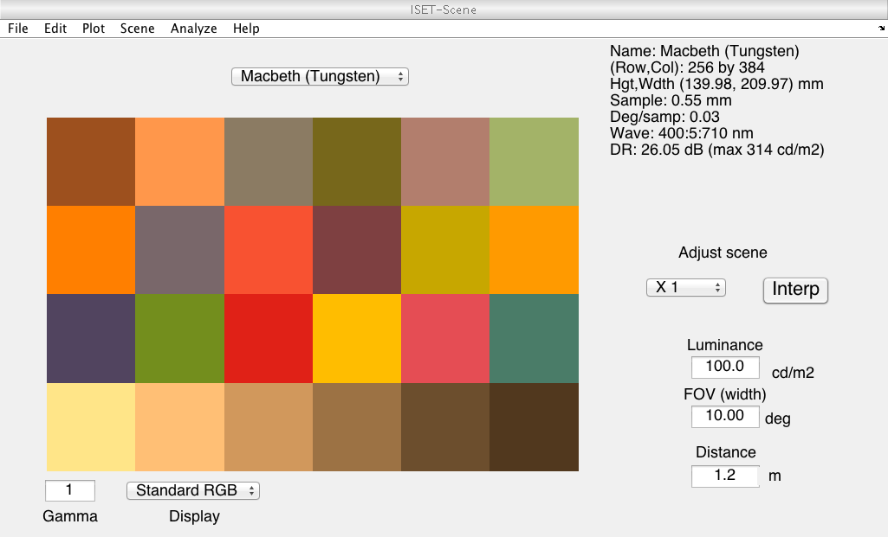
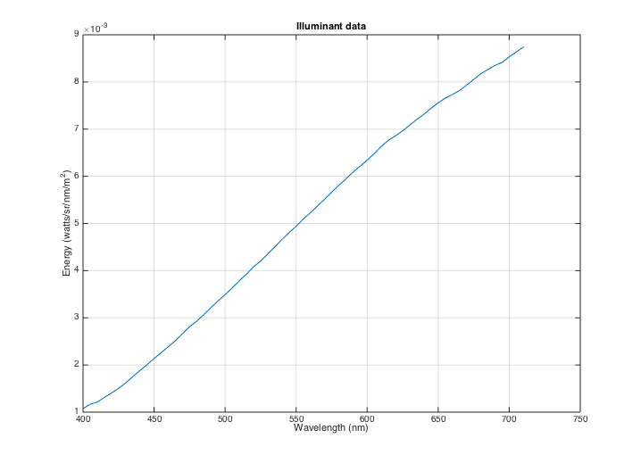
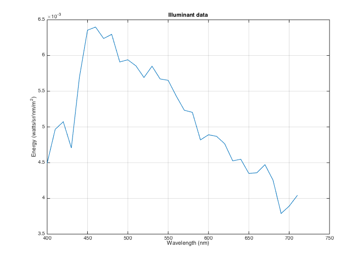
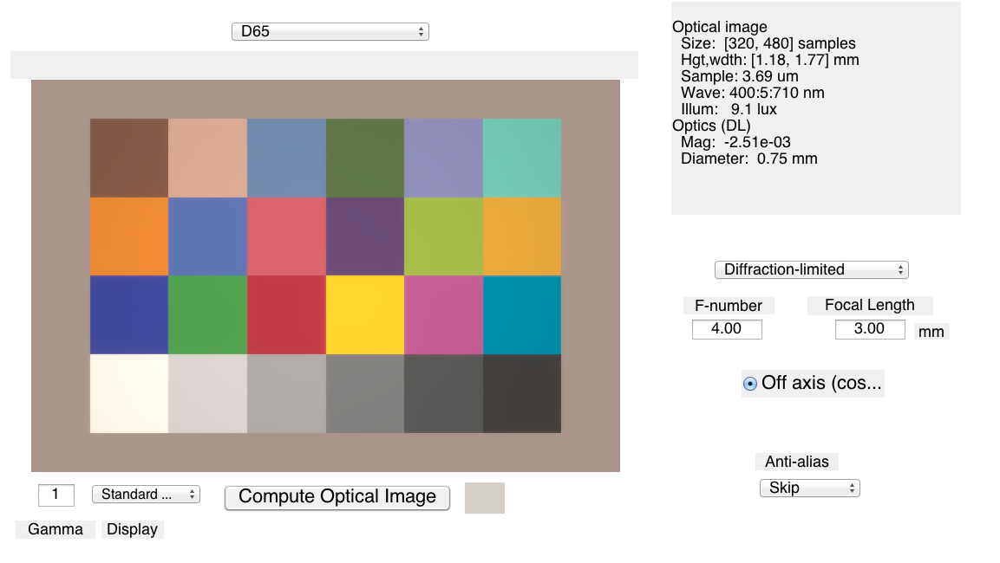
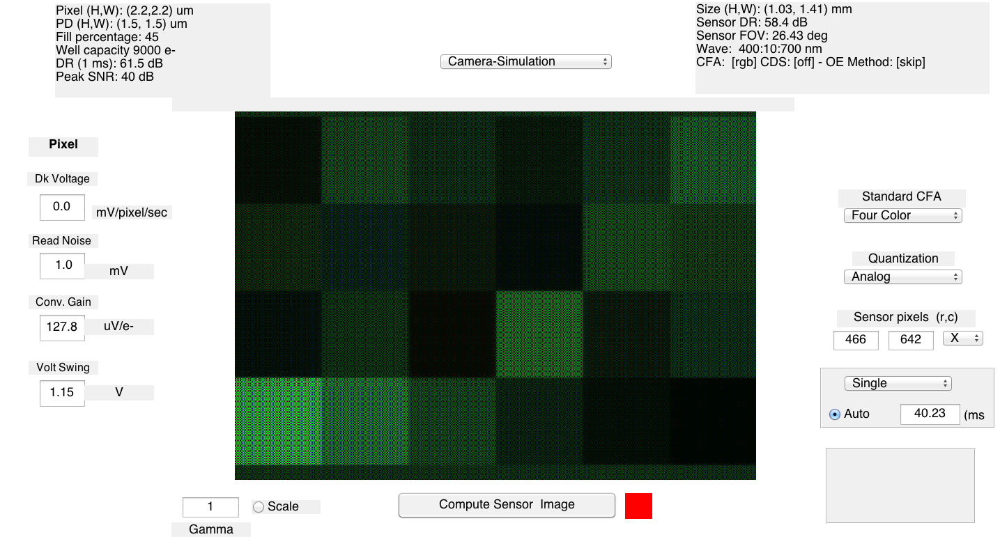

t_introduction.m
This script is a brief introduction to key ideas and methods used in ISETBIO.
To browse through scripts and tutorials use the tab-completion function. For example, Use t_"TAB KEY" to see the list of tutorials
Use s_"TAB KEY" to see the list of ISET scripts
Use s_scene"TAB KEY" to see the scripts related to scenes
and so forthSee also: t_sceneIntroduction.m and t_oiIntroduction.m
To learn more about the processing for a particular function, type help or doc followed by the function name, as in "help sensorCreate" or use "doc sceneCreate"
Copyright ImagEval Consultants, LLC, 2010.
Contents
Initialize ISET
ieInit
Initialize some parameters
% In this example, wavelengths range between 400 and 710 nm, sampled every % 5 nm. It is also possible to expand the range to include wavelengths in % the near infrared (NIR) range. Of course, this would only make sense if your % imaging sensor has sensitivity in the NIR range. wave = 400:5:710;
Scene
Create a radiometric description of the scene. There are several ways to create a scene. see scripts/scenes for more information about scenes
One is to use the sceneCreate function. In the example below, we create a scene of the Macbeth Color Checker illuminated with a tungsten light For a complete list of the types of synthetic scenes type "help sceneCreate"
A second method for creating a scene is to read data from a file. ISET includes a few multispectral scenes as part of the distribution. These can be found in the data/image/multispectral directory You can also select the file (or many other files) using the command: fullFileName = vcSelectImage;
See also: s_sceneFromMultispectral.m, s_sceneFromRGB.m
patchSize = 64; scene = sceneCreate('macbeth tungsten',patchSize,wave); % It is often useful to visualize the data in the scene window vcAddObject(scene); sceneWindow;
Each scene has a stored illuminant.
scenePlot(scene,'illuminant energy roi');
 It is possible to change the scene illuminant
scene = sceneAdjustIlluminant(scene,'D65.mat'); scene = sceneSet(scene,'name','D65'); % Set the scene name vcAddObject(scene); sceneWindow;

Once the scene is loaded, you can adjust different properties using the sceneSet command. Here we adjust the scene mean luminance and field of view.
scenePlot(scene,'illuminant energy roi'); scene = sceneAdjustLuminance(scene,200); % Candelas/m2 scene = sceneSet(scene,'fov',26.5); % Set the scene horizontal field of view scene = sceneInterpolateW(scene,wave,1); % Resample, preserve luminance % vcAddObject(scene); sceneWindow; % if you want to view the change in the GUI window
Optics
see t_oiIntroduction.m
The next step in the system simulation is to specify the optical image formation process. The optical image is an important structure, like the scene structure. We adjust the properties of optical image formation using the oiSet and oiGet routines.
ISET has several optics models that you can experiment with. These include shift-invariant optics, in which there is a different shift-invariant pointspread function for each wavelength, and a ray-trace method, in which we read in data from Zemax and create a shift-variant set of pointspread functions along with a geometric distortion function.
The simplest is method of creating an optical image is to use the diffraction-limited lens model. To create a diffraction-limited optics with an f# of 4, you can call these functions
oi = oiCreate; optics = oiGet(oi,'optics'); optics = opticsSet(optics,'fnumber',4); % In this example we set the properties of the optics to include cos4th % falloff for the off axis vignetting of the imaging lens, and we set the % lens focal length to 3 mm. optics = opticsSet(optics,'offaxis','cos4th'); optics = opticsSet(optics,'focal length',3e-3); % from lens calibration software % Many other properties can be set as well (type help opticsSet or doc % opticsSet). % We then replace the new optics variable into the optical image structure. oi = oiSet(oi,'optics',optics); % We use the scene structure and the optical image structure to update the % irradiance. oi = oiCompute(scene,oi); % We save the optical image structure and bring up the optical image % window. vcAddObject(oi); oiWindow; % From the window you can see a wide range of options. These include % insertion of a birefringent anti-aliasing filter, turning off cos4th % image fall-off, adjusting the lens properties, and so forth. % % You can read more about the optics models by typing "doc opticsGet". % You can see an online video about using the ray trace software at: % http://www.imageval.com/public/Products/ISET/ApplicationNotes/ZemaxTutorial.htm
Sensor
The irradiance is then captured by a simulated sensor, resulting in an array of output voltages. There are a very large number of sensor parameters. Here we illustrate the process of creating a simple Bayer-gbrg sensor and setting a few of its basic properties.
To create the sensor structure, we call
sensor = sensorCreate('bayer (gbrg)'); % We set the sensor properties using sensorSet and sensorGet routines. % % Just as the optical irradiance gives a special status to the optics, the % sensor gives a special status to the pixel. In this section we define % the key pixel and sensor properties, and we then put the sensor and pixel % back together. % To get the pixel structure from the sensor we use: pixel = sensorGet(sensor,'pixel'); % Here are some of the key pixel properties voltageSwing = 1.15; % Volts wellCapacity = 9000; % Electrons conversiongain = voltageSwing/wellCapacity; fillfactor = 0.45; % A fraction of the pixel area pixelSize = 2.2*1e-6; % Meters darkvoltage = 1e-005; % Volts/sec readnoise = 0.00096; % Volts % We set these properties here pixel = pixelSet(pixel,'size same fill factor',[pixelSize pixelSize]); pixel = pixelSet(pixel,'conversion gain', conversiongain); pixel = pixelSet(pixel,'voltage swing',voltageSwing); pixel = pixelSet(pixel,'dark voltage',darkvoltage) ; pixel = pixelSet(pixel,'read noise volts',readnoise); % Now we set some general sensor properties % exposureDuration = 0.030; % commented because we set autoexposure dsnu = 0.0010; % Volts (dark signal non-uniformity) prnu = 0.2218; % Percent (ranging between 0 and 100) photodetector response non-uniformity analogGain = 1; % Used to adjust ISO speed analogOffset = 0; % Used to account for sensor black level rows = 466; % number of pixels in a row cols = 642; % number of pixels in a column % Set these sensor properties % sensor = sensorSet(sensor,'exposuretime',exposureDuration); % commented because we set autoexposure sensorSet(sensor,'autoExposure',1); sensor = sensorSet(sensor,'rows',rows); sensor = sensorSet(sensor,'cols',cols); sensor = sensorSet(sensor,'dsnu level',dsnu); sensor = sensorSet(sensor,'prnu level',prnu); sensor = sensorSet(sensor,'analog Gain',analogGain); sensor = sensorSet(sensor,'analog Offset',analogOffset); % Stuff the pixel back into the sensor structure sensor = sensorSet(sensor,'pixel',pixel); sensor = pixelCenterFillPD(sensor,fillfactor); % It is also possible to replace the spectral quantum efficiency curves of % the sensor with those from a calibrated camera. We include the % calibration data from a very nice Nikon D100 camera as part of ISET. % To load those data we first determine the wavelength samples for this sensor. wave = sensorGet(sensor,'wave'); % Then we load the calibration data and attach them to the sensor structure fullFileName = fullfile(isetRootPath,'data','sensor','colorfilters','NikonD100.mat'); [data,filterNames] = ieReadColorFilter(wave,fullFileName); sensor = sensorSet(sensor,'filter spectra',data); sensor = sensorSet(sensor,'filter names',filterNames); sensor = sensorSet(sensor,'Name','Camera-Simulation'); % We are now ready to compute the sensor image sensor = sensorCompute(sensor,oi); % We can view sensor image in the GUI. Note that the image that comes up % shows the color of each pixel in the sensor mosaic. Also, please be aware % that the Matlab rendering algorithm often introduces unwanted artifacts % into the display window. You can resize the window to eliminate these. % You can also set the display gamma function to brighten the appearance in % the edit box at the lower left of the window. vcAddObject(sensor); sensorImageWindow; % There are a variety of ways to quantify these data in the pulldown menus. % Also, you can view the individual pixel data either by zooming on the % image (Edit | Zoom) or by bringing the image viewer tool (Edit | Viewer). % % Type 'help iexL2ColorFilter' to find out how to convert data from an % Excel Spread Sheet to an ISET color filter file or a spectral file/ % % ISET includes a wide array of options for selecting color filters, % fill-factors, infrared blocking filters, adjusting pixel properties, % color filter array patterns, and exposure modes.